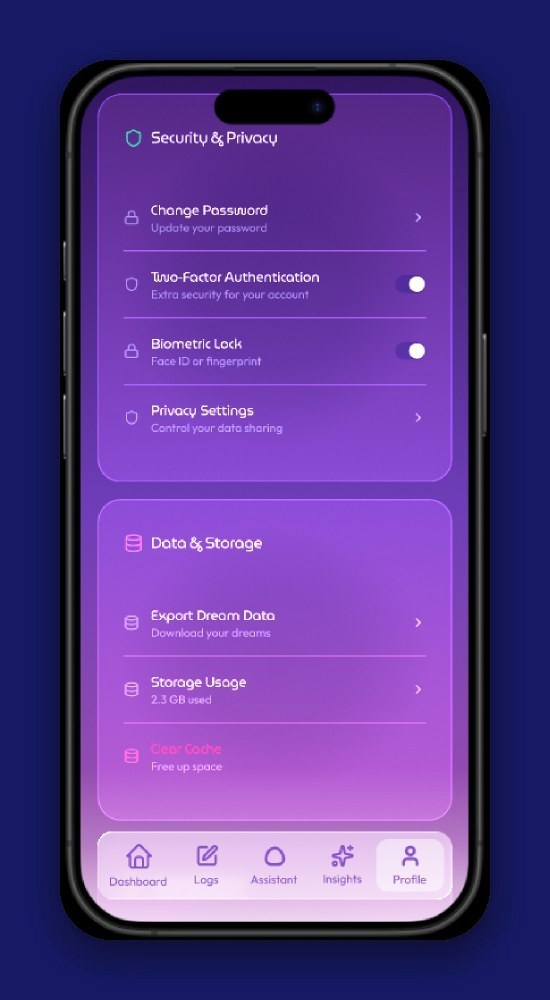
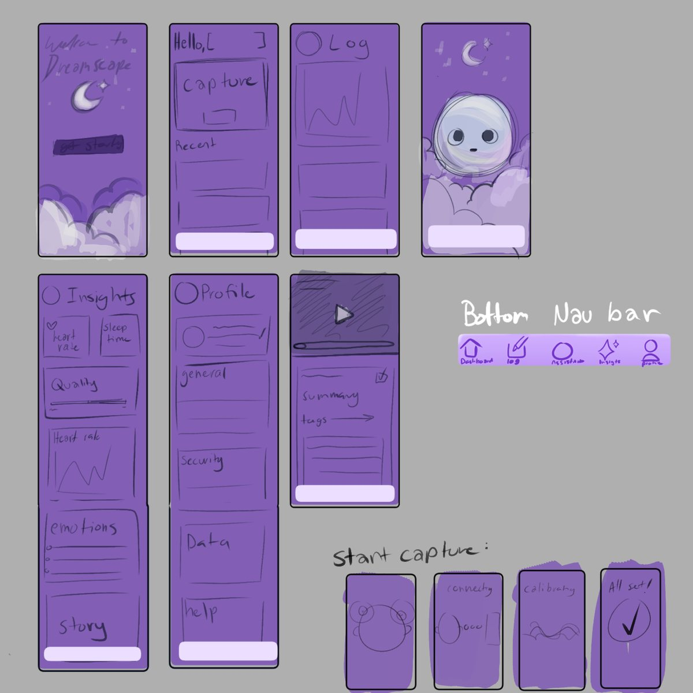
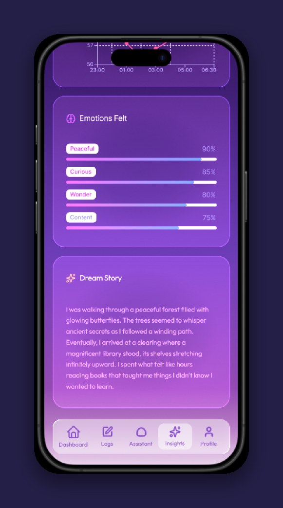
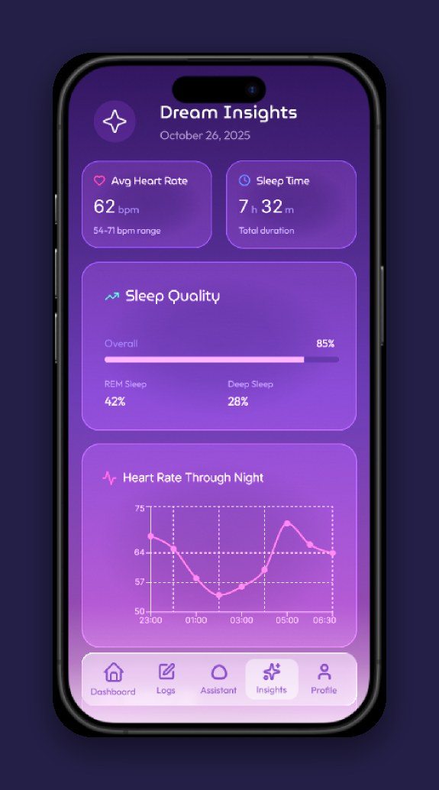
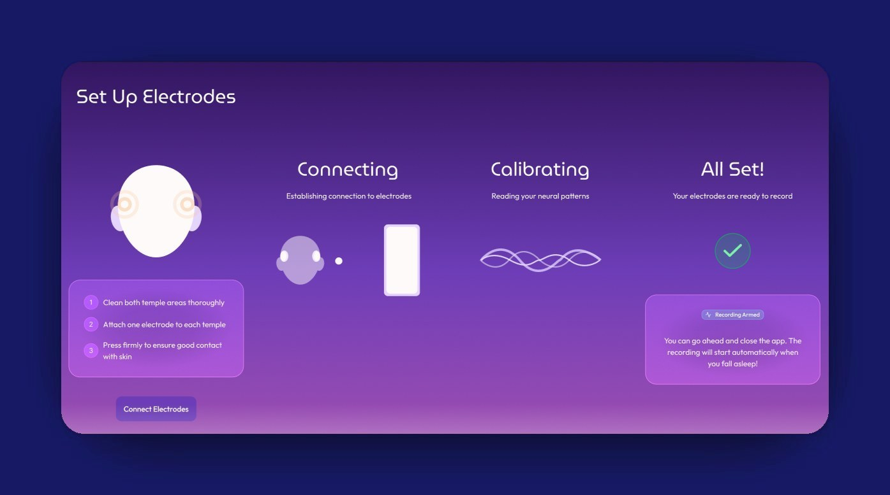

24-HOUR DESIGNATHON • UX CLUB, UT DALLAS • OCT 25–26, 2025
DreamScape
You wake up from a vivid dream, and a few minutes later it's gone. DreamScape is a speculative app that helps people hold on to their dreams and reflect on them, designed around one prompt: what might people use in the future?

- Role
- UX & Interaction Designer
- Format
- 24-hour designathon
- Timeline
- Oct 25–26, 2025
- Tools
- Figma, Spline
Overview
Problem
Dreams slip away fast once you wake up. Usually all that's left is a feeling or a stray image. Sleep apps track things like how long you slept or your heart rate, but they skip over what you actually dreamed and how it made you feel.
Goal
Help people see and keep a record of their dreams, so they can reflect on them and take care of their mental health. DreamScape turns REM sleep data into images, text, and interactive views, inside a soft glassmorphism interface with an AI companion named Snoozy.
Impact
This was a 24-hour designathon concept, so there's no usage data. See “What I’d test next” below.
Research
Research shows that looking back on your dreams can genuinely help your mental health, as long as privacy and safety come first. Clinicians can use these visualizations to encourage self-reflection, support behavior change, and guide treatment. Patients and clinicians both see value in a "digital navigator," someone who helps make sense of the visualizations accurately (Chang et al., 2023, MDPI).
Privacy matters a lot here, especially for people living with mental illness. Most people are willing to share health data if it improves their care or helps research, but only when there are real protections against misuse, discrimination, or their data ending up somewhere they didn't expect. That means letting people choose exactly what they share, making it easy to take it back, and designing for privacy from the very start (Diva Portal; Medium).
What you watch before bed can shape your dreams, including how well you remember them, how vivid they are, and how they feel. For clearer REM recordings, it helps to cut back on screens and visual stimulation before sleep (PMC). Dreams can also be painful. Seeing a nightmare played back could be really upsetting, so trauma-informed design (filtering, blurring, and only showing difficult content when someone opts in) keeps people safe without taking away the benefit of reflecting (NCBI).
Our research also traced how a nightmare feels from the night before to the days after:
Before sleep
People who get frequent nightmares can go to bed already anxious, dreading another one and wondering if they'll wake up scared (Nightmare Protocol).
During the nightmare
Fear, helplessness, anger, and sadness. The stronger those feelings are, the more distressing the dream tends to be (heiJOURNALS; PubMed).
After waking
The fear doesn't just switch off. It can make it hard to calm down or get back to sleep, and it carries into the next day's mood (PubMed).
Over time
Frequent nightmares are linked with anxiety, depression, and a higher risk of PTSD (PubMed).
What this meant for the design
- Visualizations people can export for their clinician, with a digital navigator to help
- Privacy on by default, protected with two-factor login and biometrics
- Care around painful dreams: filtered, flagged, or blurred content, plus grounding support in the app
- Clearer REM recordings through a calmer pre-sleep routine
- Working with policymakers early to help set ethical standards for sensitive neurotechnology
All of this shaped DreamScape directly. The goal was something clinicians could really use, that protects people's privacy, handles painful dreams with care, and holds up ethically.
Process

Privacy vs. clinical value
Dreams are deeply personal, but sharing them with a clinician could really help. So privacy is on by default, logging in takes two-factor or biometrics, and nothing goes to a digital navigator unless you choose to share it.

Immersion vs. emotional safety
Dreams should feel vivid and immersive, but never at the cost of someone's wellbeing. Distressing content gets filtered or blurred, flagged content only shows up if you opt in, and grounding support is built right into the app.
Design Iterations
Designed in Figma as a glassmorphic system: soft blurs, gradients, and layered transparency over a lavender-to-black background. It's meant to be easy on tired eyes, since this is an app you'd open every night and every morning.




Final Solution
Take a look at the full work: the interactive prototype, the pitch deck, and the research board it all grew from.
Dream visualization
Turns REM sleep data into images, text, and interactive views you can look back on.
Content filtering
Checks for anything that might be upsetting before you see it.
Snoozy, the AI companion
Walks you through your dream recordings and helps you reflect on what they might mean to you.
What I’d test next
I'd run a moderated test with 5 people who already keep a dream journal, asking them to record a dream and then find it again later, and noting where they hesitate. I'd want to know whether Snoozy feels supportive or intrusive right after a bad dream, so I'd ask how comfortable they felt after each step. I'd also check every glass panel against the busiest part of the background behind it, since that's where text is most likely to lose contrast.
Reflection
- Balancing speculative and realistic was the hardest part. Too far out and it stops feeling useful, but grounded enough and people can picture themselves using it.
- Playing with motion and glassmorphism showed me how transparent, layered surfaces can make an interface feel like a dream.
- Storytelling does so much of the work. It's what makes an experimental idea feel real, emotional, and centered on the people using it.
- The glassmorphism I loved has a real cost: text on a translucent panel can lose contrast depending on what's behind it. Next time I'd check each panel with a contrast checker against the lightest part of its background, aim for at least 4.5:1 on body text, and add a more solid fill wherever it falls short.